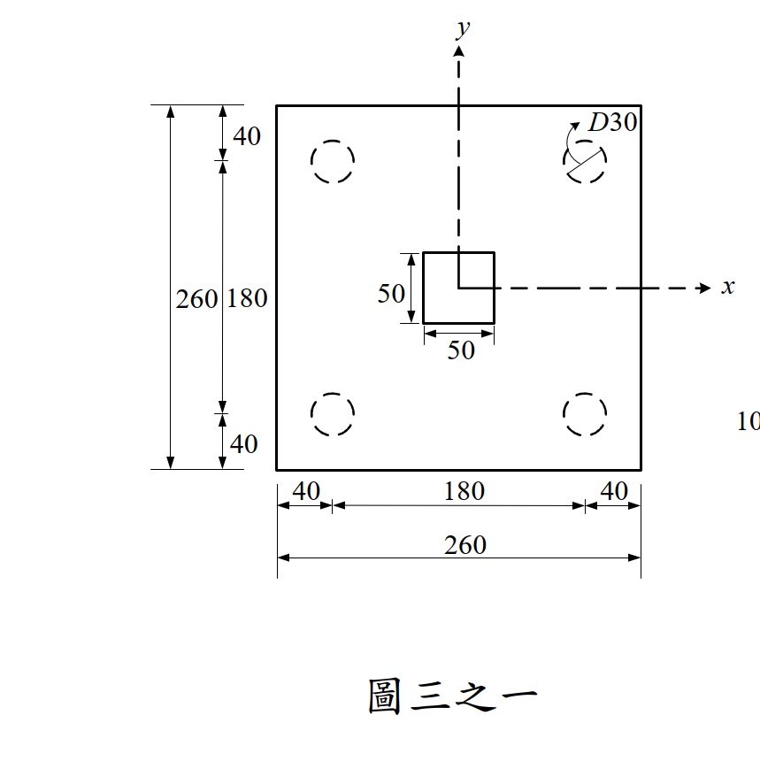
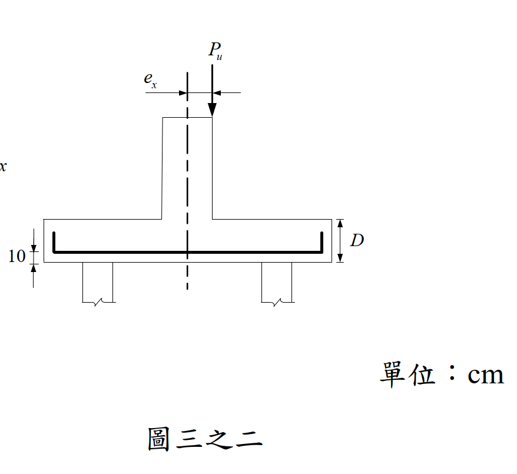
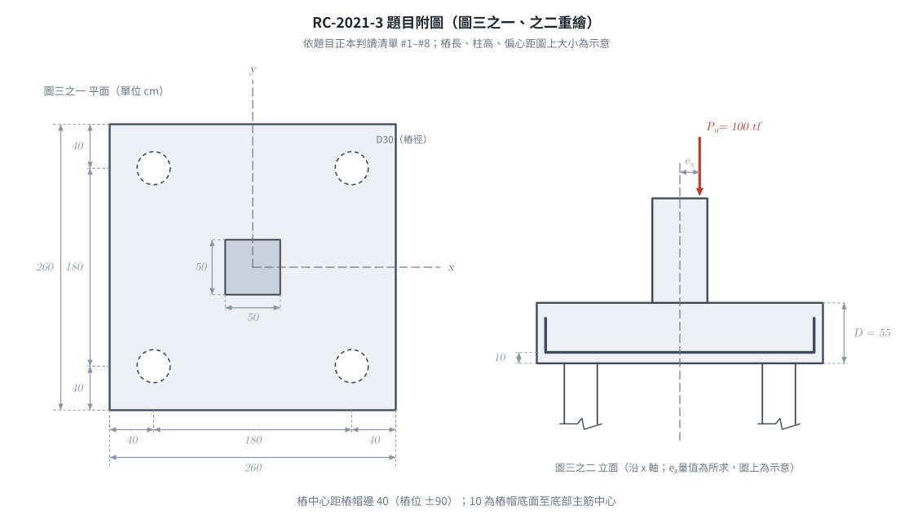

📄 題目正本：考卷原文・附圖・判讀清單（已確認）
RC-2021-3 題目正本
本檔只記錄考卷上寫了什麼、圖上畫了什麼，不含任何解法。解析見同資料夾
RC-2021-3.md。
判讀清單已經確認（凍結）；本檔原則上不再修改（改動須回考卷原圖並記 log）。
| 項目 | 內容 |
|---|---|
| 考卷 | raw/exams/RC-2021_鋼筋混凝土設計與預力.pdf 第 3 頁（頁次 4－3），第三題 |
| 考年 | 民國 110 年（2021） |
| 配分 | 20 分 |
| 附圖 | RC-2021-3-fig-1.png（圖三之一：樁帽平面；右緣夾帶圖三之二的「10」字樣）、RC-2021-3-fig-2.png（圖三之二：立面；左緣夾帶「x」字樣）；考卷為向量圖，尺寸以 PDF drawings 座標核對 |
| 判讀狀態 | 已確認（2026-11-15 使用者授權依 Claude 建議確認；轉錄 2026-11-15；PyMuPDF 110 dpi 全頁目視，附圖 250–450 dpi 局部放大，向量圖以 PDF drawings 座標核對尺寸線端點；文字以 PDF 文字層核對；盲讀後才比對既有解析） |
1. 考卷原文（逐字）
三、單柱基樁之樁帽平面尺寸為 260×260 cm，樁帽厚度 $D$＝55 cm，柱斷面為 50×50 cm，基樁直徑 30 cm，如圖三之一，柱承受偏心載重，軸向力為 $P_u$＝100 tf，偏心距為 $e_x$，如圖三之二，基樁最大承壓軸力 $P_c$＝40 tf，基樁最大承拉軸力 $P_t$＝−10 tf，且設計樁帽時，混凝土 $f'_c$＝280 kgf/cm²，不設置剪力鋼筋，忽略樁帽自重，則柱載重最大容許偏心距 $e_x$ 為何？（20 分）
[提示]計算基樁軸力時，可假設樁帽為剛性體；
檢核雙向作用，$\dfrac{V_c}{\sqrt{f'_c}\,b_0d}=\begin{cases}0.265\times(2+\dfrac{4}{\beta_c})\\0.265\times(2+\dfrac{\alpha_sd}{b_0})\\1.06\end{cases}$
其中，$\beta_c$ 為柱長邊/柱短邊；檢核雙向作用時，$\alpha_s$ 取 40；檢核角隅基樁穿孔剪力強度時，$\alpha_s$ 取 20。
2. 考卷給的公式、附表與參數
- 卷首（第 1 頁）照錄：「作答規範：依據內政部於民國 110 年 3 月 2 日公布之「混凝土結構設計規範」或中國土木水利工程學會「混凝土工程設計規範與解說（土木 401-100）」作答，未依上述規範作答，不予計分。」
- 題文數值：樁帽 260×260 cm、厚 $D$＝55 cm；柱 50×50 cm；基樁直徑 30 cm；$P_u$＝100 tf；$P_c$＝40 tf（壓）、$P_t$＝−10 tf（拉）；$f'_c$＝280 kgf/cm²；不設剪力筋；忽略樁帽自重。
- 題目印出的公式（提示）：雙向作用 $V_c/(\sqrt{f'_c}\,b_0d)$ 取三式（如上，照錄）；雙向作用 $\alpha_s$＝40、角隅基樁穿孔 $\alpha_s$＝20。屬題目印出的規範公式，依現行規範換用（差異於解析 §5 註明）。
- 沒有給：強度折減因數 $\phi$、樁帽鋼筋、基樁埋入樁帽深度、單向剪力是否檢核。
- 卷首注意事項：㈠可以使用電子計算器。㈡不必抄題，作答時請將試題題號及答案依照順序寫在試卷上，於本試題上作答者，不予計分。㈢本科目除專門名詞或數理公式外，應使用本國文字作答。
3. 附圖


圖面文字照錄：圖三之一 260、180、40、40（左側）、40、180、40、260（下方）、50、50、D30、x、y；圖三之二 Pu、ex、D、10；單位：cm、圖三之一、圖三之二。
4. 判讀清單
「把握」標不確定者優先列；解讀類項目（題目用字的意思）另標「解讀」。標「依 Claude 建議確認」者，為使用者 2026-11-15 授權「要我確認的請依你建議」後定案。
| # | 項目 | 判讀 | 圖上／題文依據 | 把握 |
|---|---|---|---|---|
| 1 | 尺寸「10」 | 樁帽底面至底部主筋中心 10 cm → $d$＝55－10＝45 cm | PDF 座標：10 的兩條延伸線 y＝550.6、557.2；主筋線 y＝550.9；樁帽底面 y＝556.2 | 確定 |
| 2 | 樁位 | 4 支樁位於四角，樁中心距樁帽邊 40 cm → 以樁帽中心為原點 $(\pm90,\pm90)$ cm | PDF 座標：樁帽 x＝118.8～248.5（260 cm，0.499 pt/cm）；樁圓心 x＝138.8、228.6，y＝460.8、550.7（距邊 20.0 pt＝40 cm）；尺寸 40／180／40 延伸線對齊樁圓心 | 確定 |
| 3 | 「D30」 | 基樁直徑 30 cm（非鋼筋號數） | 題文「基樁直徑 30 cm」；圖上 D30 指向樁圓 | 確定 |
| 4 | 柱位置 | 柱 50×50 位於樁帽正中央 | PDF 座標：柱框 x＝171.2～196.2、y＝493.2～518.2，中心 (183.7, 505.7)＝樁帽中心 | 確定 |
| 5 | 偏心方向 | $e_x$ 沿 x 軸（由柱中心量至 $P_u$ 作用線）；圖上箭頭畫在柱面只是示意 | 圖三之二 $e_x$ 尺寸由中心虛線（x＝378.4）量到 $P_u$ 箭頭（x＝391.7） | 確定（解讀） |
| 6 | 樁軸力限制 | 壓力不得超過 40 tf、拉力不得超過 10 tf；樁帽視為剛體（線性分配） | 題文、提示 | 確定 |
| 7 | 穿孔剪力檢核 | 柱周雙向作用（$\alpha_s$＝40，$\beta_c$＝1）與角隅基樁穿孔（$\alpha_s$＝20）兩者皆須檢核；不設剪力筋 | 提示 | 確定 |
| 8 | 樁帽厚 | $D$＝55 cm（頂面至底面） | 圖三之二 D 尺寸延伸線 y＝533.3、556.3 對齊樁帽頂、底面 | 確定 |
| 9 | 自重 | 忽略樁帽自重 | 題文 | 確定 |
| 10 | 考卷沒有給 | $\phi$、基樁埋入深度、樁帽配筋、單向剪力是否檢核 | 全題 | 確定 |
轉錄：2026-11-15（RC-U3-1／U3-2 題目正本推廣・批 1）
確認：2026-11-15 使用者授權依 Claude 建議確認（RC-U3-1／U3-2 題目正本推廣・批 1，關卡一）
考題編號：RC-2021-3
主分類： RC-U3-2 樓版與基腳設計
副分類： 無
設計法： USD 強度設計法
標籤： 樁帽設計 偏心載重 基樁軸力 最大偏心距 雙向剪力 角隅基樁穿孔 剛性樁帽假設
1. 題目（考卷原文見題目正本）
考卷原文、公式／附表、附圖與判讀清單（已確認）見
RC-2021-3-problem.md。本節只列解題時最容易讀錯的地方與本解使用的記號；題意以題目正本為準。

重繪自考卷圖三之一、之二，依題目正本判讀清單 #1–#8。本圖攔下的讀錯：40 量到樁中心（樁位 ±90）；10 為樁帽底面至主筋中心（$d$＝45）。
常見誤讀
| 項目 | 正確判讀 | 常見誤讀 |
|---|---|---|
| 樁位 | 樁中心距樁帽邊 40 → $(\pm90,\pm90)$ cm | 40 量到樁邊（樁位 ±75） |
| 10 cm | 樁帽底面至底部主筋中心，$d$＝55－10＝45 cm | 淨保護層 |
| D30 | 基樁直徑 30 cm | 鋼筋號數 |
| 樁軸力限制 | 最大壓力 40 tf、最大拉力 10 tf 皆可能控制 | 只檢核壓力 |
| 穿孔剪力 | 柱周雙向作用（$\alpha_s$＝40）與角隅基樁穿孔（$\alpha_s$＝20）皆須檢核 | 只檢核柱周 |
| 題給公式 | 提示印出的三式屬規範式，主線依現行規範換用 | 照抄 |
本解記號： 樁位 $x_i=\pm90$ cm；$P_u$＝100 tf；$e_x$＝所求；$D$＝55、$d$＝45 cm；柱 50×50（$\beta_c$＝1）；忽略樁帽自重。
2. 考題核心精神與出題者意圖 (Core Concepts & Examiner's Intent)
核心觀念： 在偏心軸力下，利用剛體靜力學求各基樁軸力；再依基樁承壓/承拉限制與樁帽穿孔剪力，決定最大容許偏心距。
出題者意圖：
- 測驗「剛性樁帽假設」的應用（靜力學）
- 考驗樁帽雙向剪力（穿孔）設計公式的三條件選最小值
- 確認哪個限制（基樁力 vs 穿孔剪力）才是真正控制條件
3. 解題戰略地圖與陷阱分析 (Strategic Roadmap & Trap Analysis)
作戰計畫：
Step 1：確認樁位及各樁到形心距離
Step 2：用剛性樁帽公式求各樁軸力 → 由 Pc、Pt 限制求 ex
Step 3：驗算柱底穿孔剪力（αs = 40）
Step 4：驗算角隅基樁穿孔剪力（αs = 20）
Step 5：取 Step 2 與 Step 3~4 中最嚴格的 ex
關鍵陷阱：
| # | 陷阱 | 應對策略 |
|---|---|---|
| ⚠1 | 對稱 4 根樁的 $\Sigma x_i^2$ 計算：全部 4 根都要算 | $\Sigma x_i^2 = 4\times90^2 = 32{,}400$ cm² |
| ⚠2 | $\beta_c$（柱長短邊比）= 50/50 = 1（方柱） | 公式一 $0.265(2+4/\beta_c) = 1.59$，不是 2 |
| ⚠3 | 穿孔周長 $b_0$ 對柱為方形周長 + $d$；角隅基樁取整圓與「四分之一圓弧＋兩直線至帽邊」兩者較小者 | 角隅樁 $b_0=2\times40+\pi(37.5)/2=138.9$ cm（比整圓 235.6、3/4 圓 176.7 都小） |
| ⚠4 | 尺寸效應 $\lambda_s$ | 樁帽不適用淺基礎可忽略 $\lambda_s$ 的 13.2.6.2，雙向剪力乘 $\lambda_s=\sqrt{2/(1+0.04d)}$＝0.845 |
| ⚠4 | 本題壓力限制（$P_c \le 40$ tf）比拉力限制（$P_t \ge -10$ tf）嚴格，必須分別計算兩者對應的 $e_x$ | 取較小值 |
3.5 變數層次分析 (Variable Hierarchy Analysis)
複習提示：第一次解題後，在每個卡住的知識點旁標記
⚠；第二次複習時只看有⚠的項目。
最終目標
求偏心距 ex，使：① 各基樁軸力不超過 Pc/Pt 限制；② 樁帽雙向剪力不超過 φVc（無箍筋）
本題關鍵公式（依計算順序）
$$\text{Step 1：基樁軸力} \quad \boxed{P_i} = \frac{P_u}{n} \pm \frac{P_u\cdot e_x\cdot x_i}{\sum x_j^2}$$
$$\text{Step 2：由 } \boxed{P_{i,\max}} \le P_c \text{ 得} \quad \boxed{e_{x,P_c}} = \left(P_c - \frac{P_u}{n}\right)\frac{\sum x_j^2}{P_u\cdot x_{\max}}$$
$$\text{Step 3：柱底穿孔} \quad \frac{V_c}{\sqrt{f'_c}\cdot\boxed{b_{0,\text{col}}}\cdot d} = \min\!\left(0.265\!\left(2+\tfrac{4}{\beta_c}\right),\;0.265\!\left(2+\tfrac{\alpha_s d}{\boxed{b_{0,\text{col}}}}\right),\;1.06\right)$$
$$\text{Step 4：角隅基樁穿孔} \quad \frac{V_c}{\sqrt{f'_c}\cdot\boxed{b_{0,\text{pile}}}\cdot d} = \min\!\left(\cdots,\;1.06\right)$$
$$\text{Step 5：} \boxed{e_{x,\max}} = \min\!\left(\boxed{e_{x,P_c}},\;e_{x,P_t},\;e_x \text{ s.t. } P_{i,\max} \le \phi V_{c,\text{pile}}\right)$$
L1：題目直接給定
| 符號 | 數值 | 說明 |
|---|---|---|
| 樁帽平面 | 260×260 cm | |
| $D$ | 55 cm | 樁帽厚度 |
| $d$ | $55-10=45$ cm | 有效深度（圖三之二：底部 10 cm 至鋼筋） |
| 柱斷面 | 50×50 cm | $\beta_c = 1$ |
| 樁徑 | 30 cm（D30） | |
| $n$ | 4 根 | |
| 樁心距邊緣 | 40 cm | |
| $P_u$ | 100 tf | 因數化軸力 |
| $P_c$（上限） | 40 tf | 承壓容許 |
| $P_t$（下限） | -10 tf | 承拉容許 |
| $f'_c$ | 280 kgf/cm² |
L2：需知識點推導
| 符號 | 公式／來源 | 卡關? |
|---|---|---|
| 樁位 $x_i$ | $260/2 - 40 = 90$ cm（各樁距形心） | |
| $\Sigma x_i^2$ | $4\times90^2 = 32{,}400$ cm² | |
| $P_i$（各基樁力） | $P_u/4 \pm P_u\cdot e_x\cdot 90/32{,}400$ | |
| $e_{x,P_c}$ | 令 $P_{i,\max} = 40$ tf 解 $e_x$ | |
| $e_{x,P_t}$ | 令 $P_{i,\min} = -10$ tf 解 $e_x$ | |
| $b_{0,\text{col}}$（柱） | $4\times(50+d) = 4\times95$ | |
| $b_{0,\text{pile}}$（角隅樁） | $2\times40+\pi(15+d/2)/2 = 80+\pi(37.5)/2 = 138.9$ cm | |
| $\lambda_s$ | $\sqrt{2/(1+0.04\times45)} = 0.845$ | |
| $\phi V_c$ | $\phi\times1.06\,\lambda_s\sqrt{f'_c}\times b_0\times d$（最小值公式控制） |
L3：深層知識（不懂就卡住）
| 知識點 | 說明 | 卡關? |
|---|---|---|
| 剛性樁帽假設 | 樁帽視為不變形，載重按「平截面保持平面」原理分配到各樁；公式同彎矩分配 $P_i = P/n \pm M x_i/\Sigma x_i^2$ | |
| 穿孔剪力三條控制公式 | ① 柱長短邊比（適用非方柱）② 剪跨比（$\alpha_s$ 取決於柱位置：內柱 40、邊柱 30、角柱 20）③ 固定上限 1.06；取最小值為設計控制 | |
| 角隅樁 $b_0$ | 臨界斷面取周長最小者：樁心距兩帽邊各 40 cm，臨界半徑 37.5 cm；由四分之一圓弧（面向帽內）接兩條直線至帽邊，周長 $80+58.9=138.9$ cm，小於整圓 235.6 cm，控制 | |
| $\alpha_s = 20$ 用於角隅樁 | 角隅樁相當於「角柱」位置，$\alpha_s = 20$ 使公式②更大，表示不是控制條件 |
4. 步驟化詳細計算過程 (Step-by-Step Detailed Calculation)
Step 1：樁位幾何
樁帽 260 cm，距邊緣 40 cm → 4 根樁位於 $(x, y) = (\pm90, \pm90)$ cm
$$\sum x_i^2 = 4\times90^2 = 32{,}400 \text{ cm}^2$$
Step 2：基樁軸力公式（剛性樁帽假設）
偏心矩 $M_x = P_u \times e_x = 100\,e_x$ tf·cm，各樁軸力：
$$P_i = \frac{P_u}{4} \pm \frac{P_u\cdot e_x\cdot x_i}{\sum x_j^2} = 25 \pm \frac{100\cdot e_x\cdot 90}{32{,}400} = 25 \pm \frac{e_x}{3.6} \text{ (tf)}$$
壓力側（$x_i = +90$）：
$$P_{i,\max} = 25 + \frac{e_x}{3.6}$$
拉力側（$x_i = -90$）：
$$P_{i,\min} = 25 - \frac{e_x}{3.6}$$
Step 3：由基樁軸力限制求 $e_x$
限制一：$P_{i,\max} \le 40$ tf（承壓上限）
$$25 + \frac{e_x}{3.6} \le 40 \quad\Rightarrow\quad \frac{e_x}{3.6} \le 15 \quad\Rightarrow\quad \boxed{e_x \le 54 \text{ cm}} \quad \cdots \text{①}$$
限制二：$P_{i,\min} \ge -10$ tf（承拉下限）
$$25 - \frac{e_x}{3.6} \ge -10 \quad\Rightarrow\quad \frac{e_x}{3.6} \le 35 \quad\Rightarrow\quad e_x \le 126 \text{ cm} \quad \cdots \text{②}$$
基樁軸力控制： 取較嚴格的 ① → $e_x \le 54$ cm
Step 4：驗算柱底穿孔剪力（$\alpha_s = 40$）
$$d = 55 - 10 = 45 \text{ cm}, \quad \sqrt{280} = 16.73$$
臨界周長：
$$b_{0,\text{col}} = 4\times(50 + d) = 4\times95 = 380 \text{ cm}$$
抗剪係數（取最小值）：
| 公式 | 計算 | 結果 |
|---|---|---|
| ① $0.265\times(2+4/\beta_c)$ | $0.265\times(2+4/1)$ | $1.59$ |
| ② $0.265\times(2+\alpha_s d/b_0)$ | $0.265\times(2+40\times45/380)$ | $1.785$ |
| ③ 固定上限 | — | $\mathbf{1.06}$ ← 控制 |
柱底穿孔剪力強度：
樁帽不適用 13.2.6.2（淺基礎可忽略 $\lambda_s$），依現行規範乘尺寸效應因數：
$$\lambda_s = \sqrt{\frac{2}{1+0.04\times45}} = 0.845$$
$$V_c = 1.06\times0.845\times\sqrt{280}\times380\times45 = 256{,}340 \text{ kgf}$$
$$\phi V_c = 0.75\times256{,}340 = \mathbf{192{,}260 \text{ kgf} = 192.3 \text{ tf}}$$
（不乘 $\lambda_s$：227.4 tf。）
剪力需求： 所有 4 根樁均位於柱底臨界面外側（樁心距柱心 $\sqrt{90^2+90^2} = 127.3$ cm $\gg d/2+c/2 = 22.5+25 = 47.5$ cm），故：
$$V_u = P_u = 100 \text{ tf} \ll \phi V_c = 192.3 \text{ tf} \quad\checkmark \text{（與 }e_x\text{ 無關，恆成立）}$$
Step 5：驗算角隅基樁穿孔剪力（$\alpha_s = 20$）
最大基樁軸力（當 $e_x = 54$ cm）：$P_{i,\max} = 40$ tf
臨界周長（角隅型）：
基樁半徑 $r = 15$ cm，$d/2 = 22.5$ cm，臨界圓半徑 $= r + d/2 = 37.5$ cm
樁心距兩帽邊各 40 cm，大於臨界半徑 37.5 cm，整圓可落在帽內（235.6 cm）；但臨界斷面應取周長最小者——四分之一圓弧（面向帽內）接兩條直線延伸至帽邊：
$$b_{0,\text{pile}} = 2\times40 + \frac{\pi\times37.5}{2} = 80 + 58.9 = \mathbf{138.9 \text{ cm}}\ (<235.6,\ \text{控制})$$
抗剪係數（取最小值）：
| 公式 | 計算 | 結果 |
|---|---|---|
| ① $0.265\times(2+4/1)$ | — | $1.59$ |
| ② $0.265\times(2+20\times45/138.9)$ | $0.265\times(2+6.48)$ | $2.25$ |
| ③ 固定上限 | — | $\mathbf{1.06}$ ← 控制 |
角隅基樁穿孔剪力強度：
$$V_c = 1.06\times0.845\times16.733\times138.9\times45 = 1.06\times0.845\times104{,}593 = 93{,}700 \text{ kgf}$$
$$\phi V_c = 0.75\times93{,}700 = \mathbf{70{,}280 \text{ kgf} = 70.3 \text{ tf}}$$
最大基樁軸力 = 40 tf $<$ $\phi V_c$ = 70.3 tf $\quad\checkmark$（穿孔剪力不控制）
Step 6：最大容許偏心距
| 限制條件 | 來源 | $e_x$ 上限 |
|---|---|---|
| 基樁承壓 $P_{i,\max} \le 40$ tf | 剛體靜力學 | 54 cm ← 控制 |
| 基樁承拉 $P_{i,\min} \ge -10$ tf | 剛體靜力學 | 126 cm |
| 柱底穿孔剪力 | 直接剪力 $V_u$＝100 tf 恆滿足；計不平衡彎矩轉移（$\gamma_v$＝0.40）時 $e_x\le77$ cm | 不控制 |
| 角隅基樁穿孔剪力 | 最大樁力 40 tf ≤ 70.3 tf | 不控制 |
$$\boxed{e_{x,\max} = 54 \text{ cm}} \quad\text{（由基樁最大承壓軸力控制）}$$
5. 關鍵爭議點與進階探討 (Critical Issues & Advanced Discussion)
爭議點 1：有效深度 $d$ 的取法
本題 $d = 55 - 10 = 45$ cm，其中 10 cm 為「鋼筋中心距底面」（由圖三之二讀取）。若誤取 $d = D = 55$ cm，穿孔剪力結果略有不同，但本題結果不受影響（控制條件為基樁軸力，非穿孔剪力）。
爭議點 2：角隅樁 $b_0$ 的計算方式
舊版本解析取 3/4 圓（176.7 cm）並稱「保守」，其實不保守：臨界斷面應取周長最小的可能破壞面。角隅樁的四分之一圓弧接兩直線至帽邊，$b_0$＝138.9 cm，比 3/4 圓（176.7）與整圓（235.6）都小。以 138.9 cm 並乘 $\lambda_s$ 得 $\phi V_c$＝70.3 tf，仍大於 40 tf，結論不變。
爭議點 2b：單向剪力（題目未要求）
距柱面 $d$＝45 cm 的斷面在 $x$＝70 cm，壓力側兩樁（$x$＝90、直徑 30）全在斷面外，$V_u=2(25+e_x/3.6)$。若以舊式 $0.53\sqrt{f'_c}b_wd$：$\phi V_c=0.75\times0.53\times16.733\times260\times45=77.8$ tf → $e_x\le50.1$ cm，會比 54 cm 嚴。現行規範無剪力筋時須用 $2.12\lambda_s\rho_w^{1/3}\sqrt{f'_c}b_wd$（樁帽要乘 $\lambda_s$），需樁帽配筋 $\rho_w$，題目未給，故主線不納入；作答時可註明此項檢核。
爭議點 3：拉力限制為何不控制？
在 $e_x = 54$ cm 時，拉力側樁力 $= 25 - 54/3.6 = 25 - 15 = 10$ tf（仍為壓縮力）。樁沒有進入受拉狀態。樁要到 $e_x > 90$ cm 才開始受拉，拉力達 10 tf 須 $e_x$＝126 cm，遠大於壓力限制所得 54 cm。
進階：若增加樁數或改變樁間距？
本題 4 根樁在 $\pm90$ cm 處，相當於樁群的「抵抗力矩 $= \Sigma x_i^2/x_{\max} = 32400/90 = 360$ cm」。若樁間距增大，$\Sigma x_i^2$ 增加，可允許更大的偏心距。
修正日期：2026-11-15（§1 改為指向題目正本，插入重繪附圖 figs/RC-2021-3-fig-1-problem.svg；舊 §1 重述改寫為常見誤讀與本解記號；本行非答案勘誤）
修正日期：2026-11-15（FIX-RC-U3-B1 小筆誤修正，答案不變：角隅樁臨界周長 3/4 圓 176.7 → 角隅型 138.9 cm（原稱「保守」實為偏大）；樁帽雙向剪力依現行台灣規範（建築物混凝土結構設計規範 2023）乘 $\lambda_s$＝0.845（柱周 227.4 → 192.3 tf、角隅樁 105.7 → 70.3 tf，皆不控制）；§5 補單向剪力註記。$e_{x,\max}$＝54 cm 不變。驗證：check_errata_U3_B1.py 重算，MISMATCHES: 0）
修正日期：2026-11-15（RECHECK-RC-U3-B1 落實檢查輕微殘留修正，非勘誤、答案不變：Step 6 表柱底穿孔剪力補不平衡彎矩轉移限值 $e_x\le77$ cm（不控制）、角隅樁改列數值；爭議點 3 改正「拉力限制在 90 cm 開始控制」→ 90 cm 開始受拉、126 cm 達拉力上限）